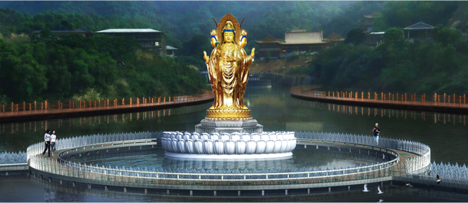
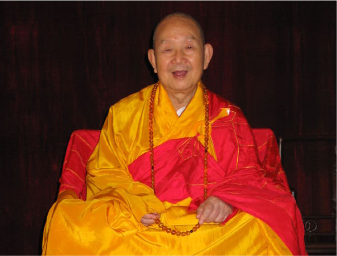

寺院介绍
又名石龙寺、石灵岩，300年历史
石灵寺又名石龙寺、石灵岩，已有300多年历史，位于揭西县钱坑镇自然生态风景秀丽的仙径山之望天狮山腰。
《潮汕文物志》、《潮州府志·揭阳县正续志》《揭西县志》、《揭西文史》等多部史书对此名胜古迹都有记载。石灵寺古刹历史悠久，寺院古朴，奇石磷峋，林木茂密。
寺前有个较为宽阔的坑地，如果有人在石上击掌，这坑地便听到“蛤”的叫声，因而此坑称为“蛤坑”。蛤坑下面的低洼地修成一个湖，面积约100亩。湖水清澈，碧波荡漾，山峰、林木、寺院、奇石映入湖中，形成一幅优美的画卷，更添古寺秀色。
扩建石灵寺耗资巨大，故恳望海内外十方贤达、大德居士发菩提心、以弘扬佛法为念，打开宝藏，培植福田。佛家认为：为建佛教寺院殿堂楼宇捐资布施，辗转劝募，唯冀不吝，广结胜缘，成就善举无量功德回向您及家人增福延寿，福延子孙，广种福田，喜获佛果！
石灵寺是粤东地区知名的古寺之一，历代高辈石灵寺出，曾历经沧桑。2003年经政府批准恢复为佛教活动场所开放，礼请中国佛教协会咨议委员会副主席、省佛教协会永远名誉会长、时任广州光孝寺和陆丰玄武山元山寺等十几所大寺庙的住持（方丈）新成老和尚为石灵寺住持。
为适应当今佛教事业发展和海内外信众的需求，在各级政府的大力支持和关心下，新成老和尚不负历史重任，发弘愿筹资扩建石灵寺道场，经十几年的努力，特别是2010年以来，他率两序大众筹善款扩建石灵寺古刹，规划面积200多亩（13万多平方米），先后修建了大雄宝殿、观音阁、天王殿、藏经阁、钟鼓楼、斋堂、僧舍等。
石灵寺道场将按照新成老和尚的要求，为了成就道业，续佛慧命，还需修建禅堂供信众修禅、弘法用房举办佛学大讲坛等，因此祈望各位社会贤达、大德和广大信众继续给予资助，使石灵寺各项配套设施早日完善。将石灵寺道场办成成就社会十方，福利广大信众，集礼佛和休闲令人心驰的佛教圣地。
住持介绍
新成住持，俗姓林
1919年出生。于饶平县海山隆福寺礼又哲大师剃度出家，法号觉就，外字新成。中国近代高僧虚云和尚座下受具足戒。
新成法师
住持
1980年宗教政策落实以后，新成和尚积极投入恢复重建光孝寺、六榕寺、海幢寺工作。为恢复重建大和尚积极奔走呼吁，积募善款，奔走政府，自1984年始大和尚相继担任光孝寺，六榕寺、海幢寺住持方丈。
新成和尚爱国爱教，严持戒律，广兴丛林，捐资助学，对外交流，培育僧才方面，均贡献卓越。1987年荣获广东省政府颁发的“两个文明建设贡献的先进个人”称号，“扶贫热心人”奖章，1999年赴京出席第三次全国民族团结表彰大会，并上天安门参加国庆50周年观礼阅兵。2011年获得“羊城慈善先进个人慈善之星”称号。